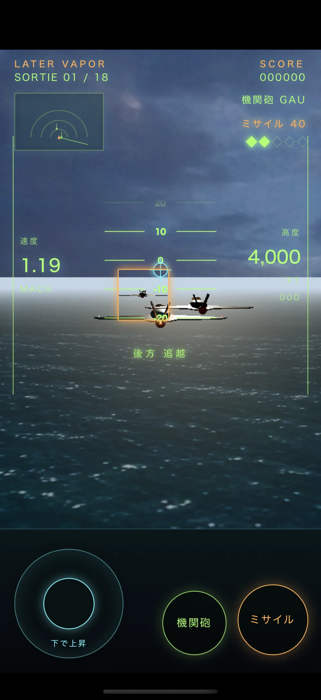

An arcade flight experience
Chase the
horizon.
Take to the skies in Later Vapor, an arcade-inspired aerial combat game built for the thrill of the chase.
iOS edition in preparation
Take flight
Eyes forward.
Stay on target.
Slip into the chase and face waves of aircraft across a series of sorties. Line up your target, fire the cannon, and wait for a lock before launching a missile.
From the first ocean crossing to the next horizon, every sortie is a chance to fly a little better.

IN-GAME VIEW ／ DEVELOPMENT CAPTUREMade for touch
The sky is
yours to fly.
A virtual stick puts steering at your fingertips, with cannon and missile controls close at hand. Play in portrait or landscape and keep your sights on the action.
Pull back to climb. Push forward to descend.
Use the cannon or lock on for a missile shot.
Touch controls adapt to your screen orientation.
Ready for your next sortie?
See you
in the sky.
The iOS edition is in preparation. Have a question in the meantime?
Visit support